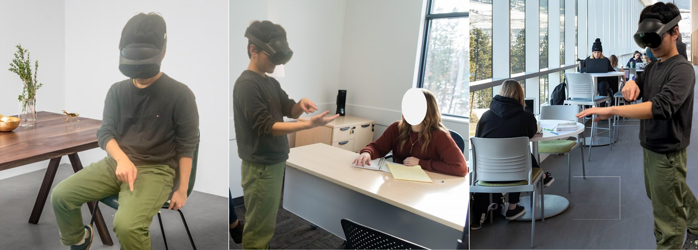
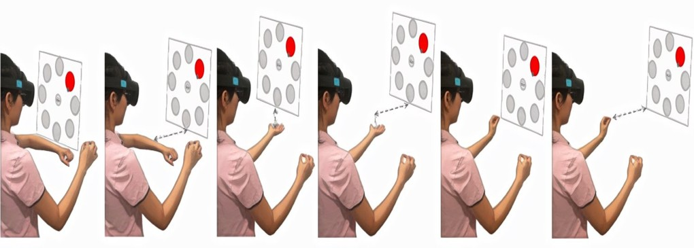
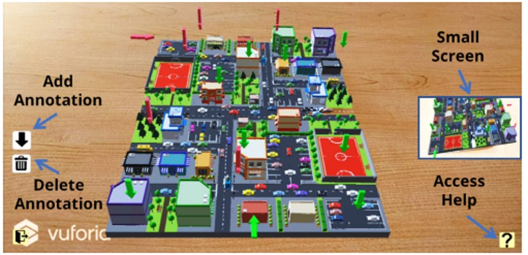
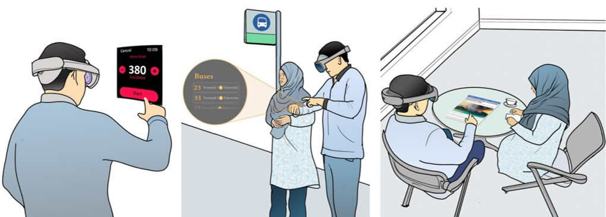
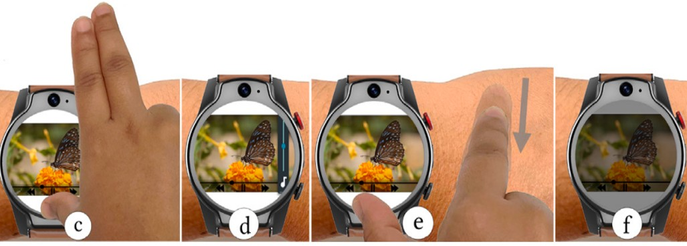
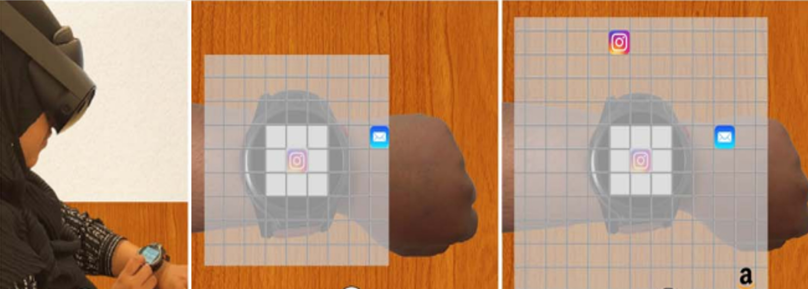
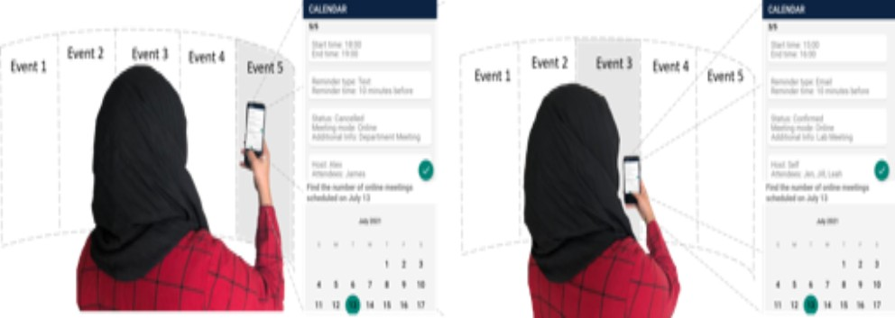
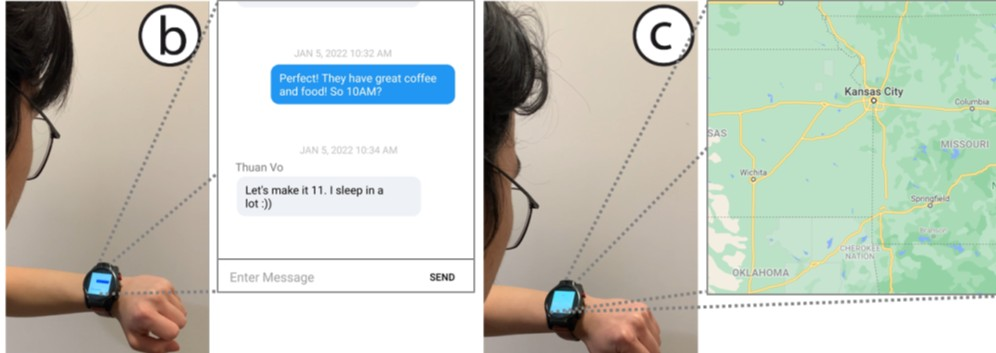

Exploring Body-Anchored Augmented Reality Interfaces Across Different Mobility and Social Contexts
Marium-E- Jannat, Shukan Miteshkumar Shah, Khalad Hasan
ISMAR 2025 · Daejeon, Republic of Korea
My work focuses on user interfaces and interactions for mobile and wearable devices in diverse usage contexts. My research is conducted primarily through the lens of user performance and user experience in design and Human-Computer Interaction (HCI) aiming to provide seamless access to digital information in a context-aware manner. I have published at top HCI venues, including conferences such as CHI and ISMAR, and journals such as the International Journal of Human-Computer Studies (IJHCS) and IEEE Transactions on Visualization and Computer Graphics (TVCG). I bring more than five years of specialized research experience in Artificial Intelligence (AI), Machine Learning (ML), and Natural Language Processing (NLP), gained before I began my PhD in HCI.
Google Scholar metrics, September 2026. Full list on Google Scholar.

Marium-E- Jannat, Shukan Miteshkumar Shah, Khalad Hasan
ISMAR 2025 · Daejeon, Republic of Korea

Marium-E- Jannat, Ngan Phan, Anmol Chadha, Keiko Katsuragawa, Khalad Hasan
CHI 2025 · Yokohama, Japan
Honorable Mention Award
Nelusha Nugegoda, Marium-E- Jannat, Khalad Hasan, Patricia Lasserre
IEEE TVCG · 2024

Marium-E- Jannat, Prateek Dhaka, Keiko Katsuragawa, Khalad Hasan
ISMAR 2024 · Bellevue, WA, USA

Marium-E- Jannat, Xing-Dong Yang, Khalad Hasan
International Journal of Human-Computer Studies · 2023

Marium-E- Jannat, Khalad Hasan
ISMAR 2023 · Sydney, Australia

Thuan Vo, Marium-E- Jannat, Khalad Hasan, David Ahlström
Graphics Interface 2022 · Montréal, Canada

Marium-E- Jannat, Thuan T Vo, Khalad Hasan
CHI EA 2022 · New Orleans, LA, USA
OVI Lab, UBC Okanagan. Advisor: Dr. Khalad Hasan. Literature review, research design, user studies, quantitative and qualitative analysis, publication and student mentoring.
UBC Okanagan. Advisor: Dr. Khalad Hasan. AR interaction, context-aware interfaces, mobile and wearable computing, user experience.
UiTR, UBC Okanagan. Digital technology, travel behavior and smartphone usage; mobile prototypes for iOS and Android. Advisors: Dr. Mahmudur Fatmi and Dr. Khalad Hasan.
UBC Okanagan. Advisors: Dr. Apurva Narayan and Dr. Khalad Hasan.